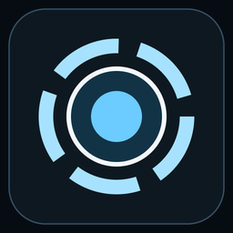

OMNIBLOOM · PRESS KIT
Made for the couch.
A controller-friendly browser and connected homebrew tools for PlayStation 5.

Ground #070C12
Panel #0E1821
Text #E6EDF3
Accent #6CCBFF
Interface previews
Desktop browser prototypes, not released console screenshots.